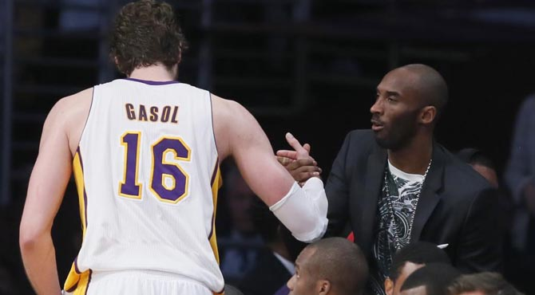

BALONCESTO


BALONCESTO
Kobe: "He sido muy claro, quiero a Pau aquí, no hay discusión, él nos dará la oportunidad de otro anillo"
Kobe Bryant saluda a Gasol tras ser sustituido
"He sido muy claro cuando me he reunido con Mitch (Kupchack manager general de la franquicia): Quiero a Pau aquí. No hay duda ni discusión posible. Creo que nos da la mayor oportunidad para ganar otro título". Así de tajante se ha mostrado Kobe Bryant tras reunirse con la directiva en la entrevista de cierre de temporada.
La estrella de los Lakers ha sido rotundo en su análisis con los jefes de los Lakers: "Un año más. Un año más de esto. Nuestros contratos acaban, Pau finaliza el año que viene, con suerte pueden cerrar a Dwight (Howard) para muchos años para que él sea el futuro... Así que vamos a darle una oportunidad a esto. No tengo ninguna duda: podemos ganar otro anillo".
Kobe, que confía en poder estar recuperado para el inicio de temporada, se muestra confiado: "Hay que ver lo bien que empezamos a jugar cuando resolvimos cómo teníamos que jugar unos con otros. Este es mi mensaje".
Eso sí, Kobe sabe que la decisión final de los Lakers con Pau y Howard no va a depender únicamente del punto de vista deportivo y sí del económico por los impuestos y la tasa de lujo.

Comentarios
Invitado324
Gran artículo